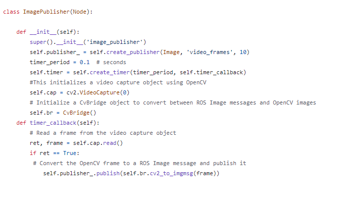
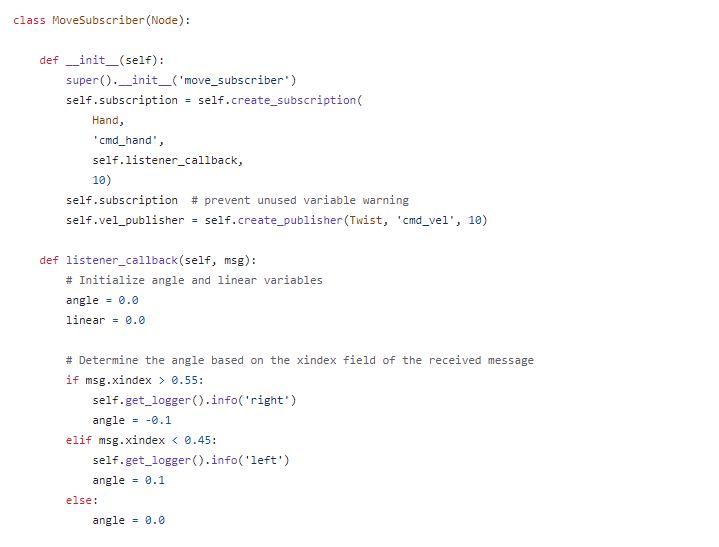
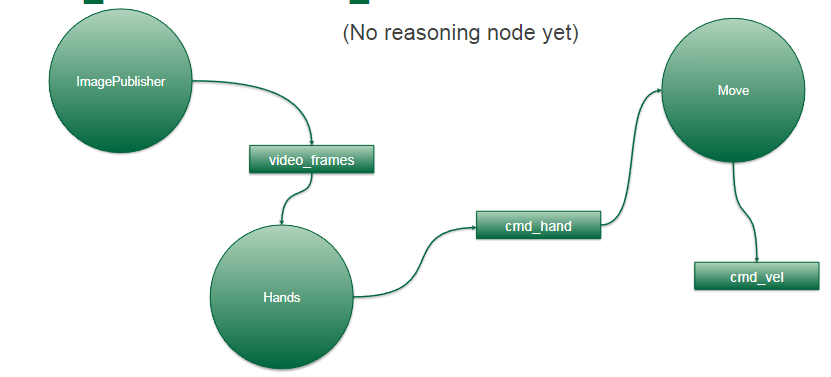
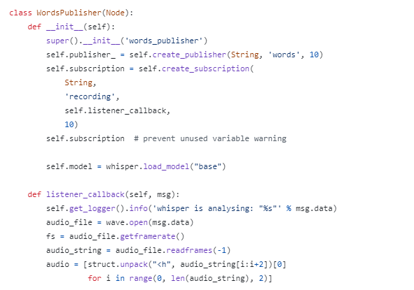
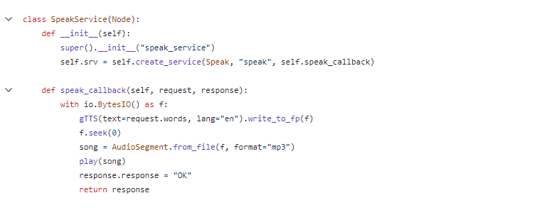

This is the process of 4 ROS 2 packages, aisd_vision, aisd_hearing, aisd_speaking and aisd_move, to gain hands-on experience with ROS 2 development.
-
Step 1 : Create aisd_vision Package
Updated package.xml with dependencies (rclpy, image_transport, cv_bridge, sensor_msgs, std_msgs, aisd_msgs, python3-mediapipe-pip). Modified setup.py for entry points, specifying nodes to run and implementing image_publisher.py and hands.py nodes .
Step 2 : Create aisd_motion Package
Updated package.xml with the aisd_msgs dependency. Modify setup.py for entry points. Implemented move.py, a node subscribing to Hand messages and publishing Twist messages.
Step 3: Building the Workspace
Installed pip: sudo apt install python3-pip. Used rosdep to install dependencies: rosdep install -i --from-path src --rosdistro humble -y. Fixed potential numpy version issues by installing a specific version: pip install numpy==1.25.2.
Step 4: Create the aisd_hearing Package
Updated aisd_hearing/package.xml with dependencies (rclpy, std_msgs, python3-pyaudio, portaudio19-dev, python3-pip). Installed additional dependencies using terminal commands. Edited aisd_hearing/setup.py for entry points. Created recording_publisher.py and words_publisher.py using online templates.
Step 5: Create the aisd_speaking Package
Created speak.py by adapting MinimalService node code. Updated aisd_speaking/package.xml with dependencies (rclpy, std_msgs, ffmpeg). Installed gtts (Google Text-to-Speech) dependency using terminal command. Edited aisd_speaking/setup.py for entry points.